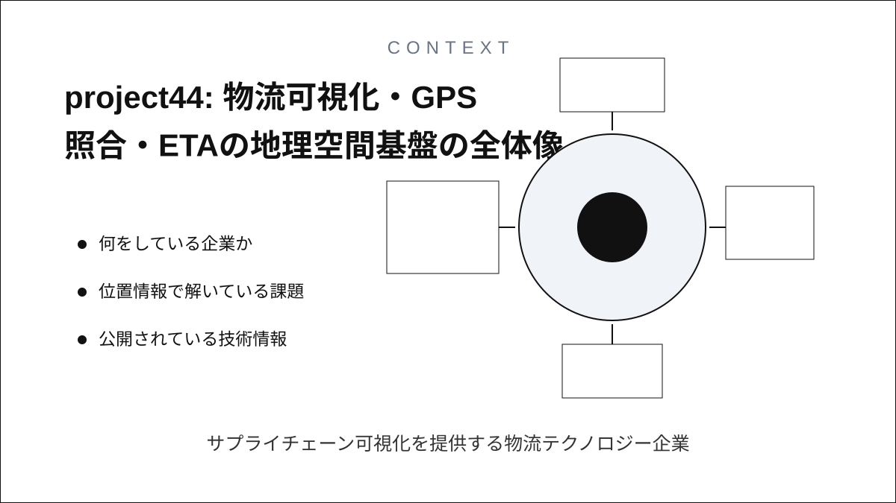
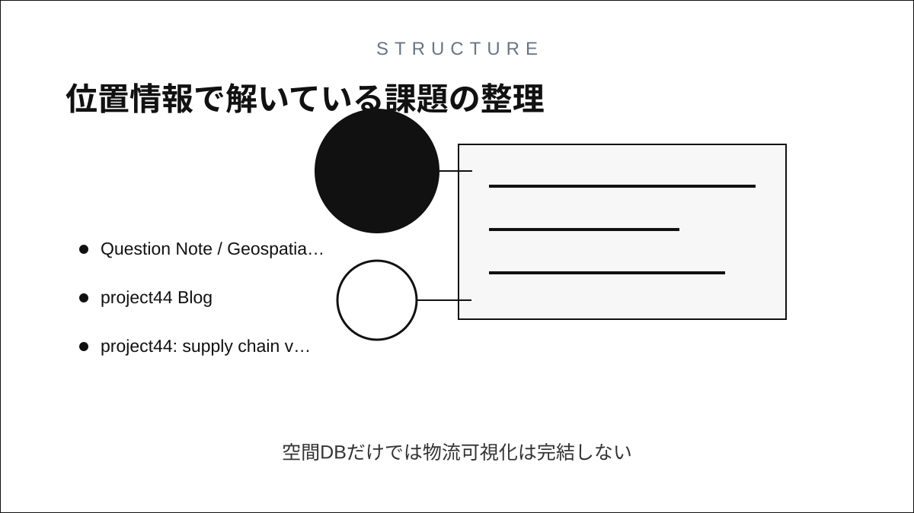
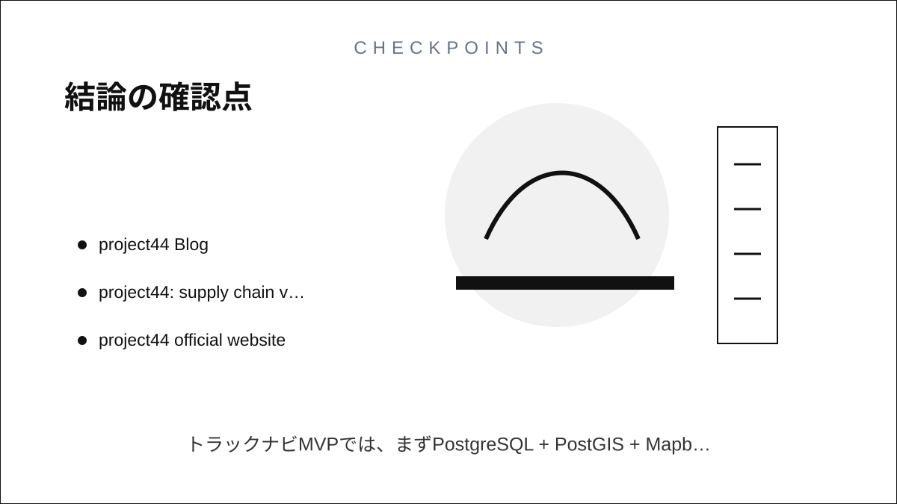

Question Note / Geospatial Architecture
project44: 物流可視化・GPS照合・ETAの地理空間基盤

何をしている企業か
サプライチェーン可視化を提供する物流テクノロジー企業。トラック、船、鉄道、航空などの輸送データを荷主向けに統合する。
位置情報で解いている課題
異なる運送会社、GPS、テレマティクス、TMS、配送イベントをつなぎ、荷物や車両の現在地、到着予測、遅延を可視化する必要がある。

公開されている技術情報
使っている地理空間技術
公開資料ではリアルタイム輸送可視化、キャリア接続、ETA、サプライチェーンイベント管理が説明されている。GISは単なる地図表示ではなく、車両・荷物・発着地・イベントの照合に使われる。
「独自GIS」と呼べる部分
独自GIS的な部分は、複数ソースのGPSやステータスをshipment単位へ結びつけ、ETAと例外通知を出す統合レイヤー。H3等の具体採用は公開情報だけでは断定しない。
PostGISとの違い
PostGISは地点・ジオフェンス・到着判定に使えるが、project44型ではデータ接続、ID照合、イベント正規化、ETA、可視化が中心になる。空間DBだけでは物流可視化は完結しない。
アーキテクチャ上どこに入るか
Mobile App
↓
Backend API
↓
Geospatial Engine / Index
↓
DB / Cache
↓
Map / Navigation APIこの図でいう Geospatial Engine / Index が、空間インデックス、ルーティング、ETA、マッチング、リアルタイム位置キャッシュを吸収する場所です。PostGISは主に DB / Cache 側の保存・検索基盤として使い、Mapbox等の地図APIは Map / Navigation API 側に置きます。
トラックナビアプリに応用できる点
トラックナビでは、車両位置そのものより、案件、目的地、停車、到着、遅延理由を同じIDで追える設計が参考になる。
まだ真似しなくてよい点
多数キャリア連携、世界規模の可視化ネットワーク、複雑な例外管理はMVPでは不要。
将来スケールしたときに参考になる点
荷主や運送会社連携を増やす段階で、GPS、作業ステータス、到着予測、通知履歴を分けて保存する。
結論
project44の事例は、独自GISを「巨大な地図DB」ではなく、空間インデックス、ルーティング、ETA、マッチング、リアルタイム位置キャッシュ、分析基盤の組み合わせとして読むと理解しやすいです。トラックナビMVPでは、まずPostgreSQL + PostGIS + Mapboxで実用範囲を作り、後からH3/S2/Redis GEO/独自インデックスを足す順番が安全です。
